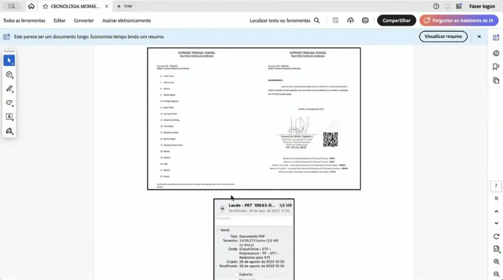
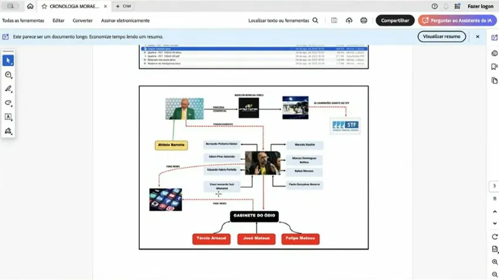

Tagliaferro apresenta a senadores documentos com acusações contra Moraes
Em audiência na Comissão de Segurança Pública do Senado, Tagliaferro denuncia fraude na elaboração de documentos que embasaram operação

Eduardo Tagliaferro, ex-assessor de Alexandre de Moraes, apresentou registros de supostas irregularidades cometidas no gabinete do ministro do STF (Supremo Tribunal Federal) em audiência no Senado.
Tagliaferro apresentou à Comissão de Segurança Pública na terça (2) registros relacionados ao caso dos empresários bolsonaristas que discutiram golpe de Estado em grupo no WhatsApp. O caso foi revelado pelo Metrópoles.
A operação da PF (Polícia Federal) contra um grupo de empresários mirou nomes como o de Luciano Hang, da rede de lojas Havan; e Afrânio Barreira Filho, do restaurante Coco Bambu.

Apesar da operação ter ocorrido em 23 de agosto de 2022, os materiais técnicos que o embasaram teriam sido produzidos pelo então assessor entre 26 e 29 de agosto.
O ex-assessor afirma ter sido procurado por Airton Vieira, juiz instrutor do gabinete de Moraes, para que fossem confeccionados documentos adulterados para justificar a operação contra os empresários.

Tagliaferro diz que criou mapas mentais e um relatório em momento posterior à ação da PF.
Os documentos foram remetidos ao colegiado, mas ainda não foram disponibilizados publicamente ou remetidos a autoridades.
“Não teve nenhuma investigação pública. Não se sabia se de fato esse grupo estava falando a coisas de atos antidemocráticos. Foi simplesmente pela matéria do Guilherme Amado [no Metrópoles], no qual o Alexandre de Moraes resolveu fazer uma busca de pensão e pagar para ver”, afirmou.